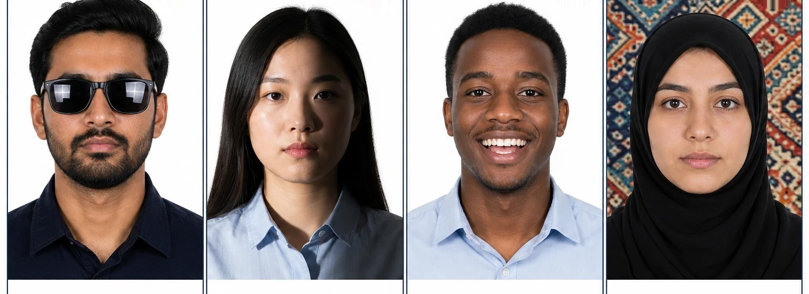

Take or upload your DV photo
Use a plain white or off-white background. The photo must show your current appearance, face forward, with neutral expression and both eyes open.
Application requirements
A short, practical checklist for the photo, identity documents, and family information we need before preparing a Diversity Visa entry.
Simple upload flow
Use a plain white or off-white background. The photo must show your current appearance, face forward, with neutral expression and both eyes open.
We will request passport or government ID images to verify spelling, identity details, and application information before submission.
We can crop and resize the image to the required format, but we should not retouch your face or digitally alter your appearance.
Official DV photo rules
We review the photo before submission and ask for a replacement when it is not ready.
Selfie feature plan
Camera works on HTTPS production pages and localhost. iPhone, Android, and desktop browsers may ask permission before opening the camera.
We can add a “Take a selfie” button in the application form, but the app should guide applicants to stand in front of a real plain white or off-white background. Background removal is risky because official guidance does not allow digital alteration that changes appearance, and edited-looking photos may be rejected.
Photo samples
These examples are simplified guidance based on the official photo rules. The automated validator can check file size, format, dimensions, and a basic background estimate, but human review is still required for glasses, hats, pose, shadows, facial expression, and background quality.
Plain white/off-white background, face forward, neutral expression, both eyes open.

Bad photo examplesDo not submit photos with glasses, tilted or sideways face, messy background, harsh shadows, overexposure, blur, hats, or visible objects behind you.
Document checklist